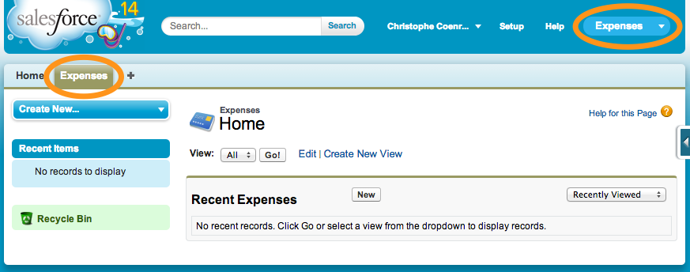
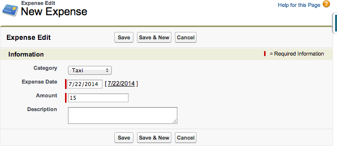

Module 4: Creating the Expenses Tab
In this module, you create a Tab to provide access to the Expense object both in the Salesforce.com application in your computer's browser and in the Salesforce1 Mobile App. You also create an Application to provide quick access to the Expenses tab while working in the Salesforce.com application in your computer's browser.

Step 1: Creating a Tab
In Setup mode, select Build > Create > Tabs
In the Custom Object Tabs section, click New
Select Expense as the Object, click the magnifier icon next to Tab Style and select the Credit card icon
Click Next, Next
Uncheck the Include Tab checkbox to ensure the Expenses tab doesn't appear in any of the existing applications (In step 2, you will add the Expenses tab to a new application)
Click Save
Step 2: Creating the App
A Salesforce App is a group of Tabs that makes it easy for users to access a set of related features in the full Salesforce.com browser app.
The concept of App as a way to organize Tabs is not used in the Salesforce1 Mobile App.
In Setup mode, select Build > Create > Apps
In the Apps section, click New
Check Custom app and click Next
Enter Expenses for both the App Label and App Name, and click Next
Accept the default App Logo and click Next
Add the Expenses tab to the Selected Tabs and click Next
Check the Visible checkbox for the System Administrator profile and click Save

Select Expenses in the App selector (upper right corner of the screen)
If the Expenses App doesn't appear in the App Selector, you probably forgot to assign it to the System Administrator profile. In Setup, select Build > Create > App, click Edit next to Expenses, check the System Administrator profile, and click Save.
Step 3: Enter Sample Data
Click the Expenses Tab
Click New
Enter a sample expense

Click Save
- Creating a Developer Edition Account
- Installing the Salesforce1 App
- Creating the Expense Object
- Creating the Expenses Tab
- Entering Expenses in the S1 Mobile App
- Creating a Mobile Layout
- Creating a Compact Layout
- Uploading Receipts using the Chatter Feed
- Creating a Global Action
- Working with Related Objects
- Creating a Child Record with an Object Action
- Updating a Record with an Object Action
- Working with Mobile Cards
- Next Steps